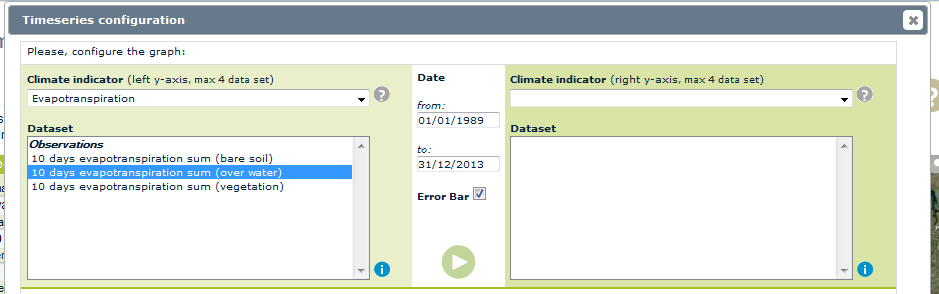

Description of the page content
Each page is composed of the following elements:
- Map viewer section
use this area to visualize one or more data sets over the map:

- Spatial configuration section
use this area to select a valid geographical feature to query:

- a graph configuration section
use this area to configure the query and show the graph:
